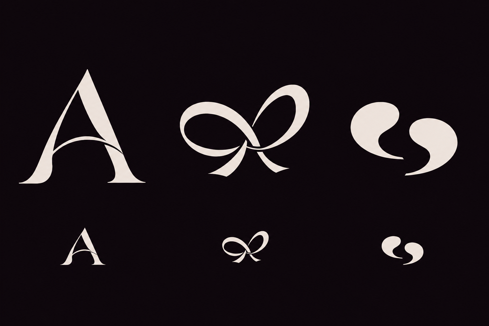

New: more conversation-related symbols, with B and C kept intact
A signature for the first hello.
Three companion signs, built around connection. The lettering stays exactly as it was: the same R, the same breathing room. The question is what a symbol adds.
Loading artwork…
The shared A
An initial with a curved bridge. A quiet gesture of coming closer, carried by the first letter of the name.
The fleeting tie
Two loose loops meet. A light connection, with movement and a little flirtation: the moment two paths cross.
The first exchange
Two punctuation-like forms answer each other. Two voices, a space between them, and the beginning of a conversation.
Does it add something?
Same wordmark. With and without the sign.
B / The fleeting tie
The emblem is a companion, not an obligation. The wordmark can still live on its own.
At a smaller scale
Actual CSS sizes. Tiny contours have a light optical lift; this is a legibility test, not an approved app icon.
What this direction brings
The ribbon adds warmth and a sense of movement to the composed lettering. Its link to a fleeting connection is an intention, not a meaning everyone will automatically read.
If we keep it: simplify the crossing for small sizes and refine the tails. Keep it light enough to avoid a gift-bow or wedding feel.
{kind=link}
{kind=link}
Source, process & what is still open
The companion signs were explored with image generation, then fitted as flat vector contours for this comparison. These are design studies, not final hand-refined identity masters. All three use the unchanged round 9 wordmark; neither its final weight nor a companion sign has been approved.
The board below is the selected generated source. The live specimens above use SVGs with exact brand colours, so they can be compared without the source image's texture. Small-size contours receive a slight stroke lift. No application files have been changed, and no trademark or similarity clearance is implied.
Generation mode: built-in image generation, followed by a reference-image edit. Read the generation prompts · Download the source board · The earlier ribbon
{kind=link}
{kind=link}
